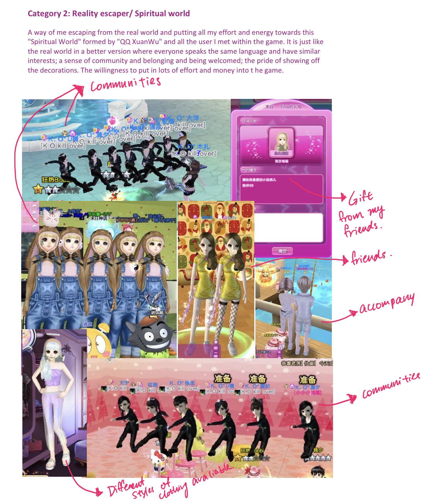
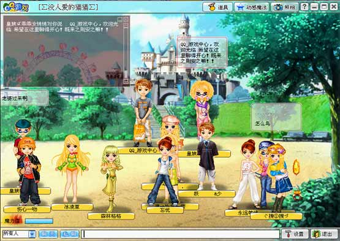
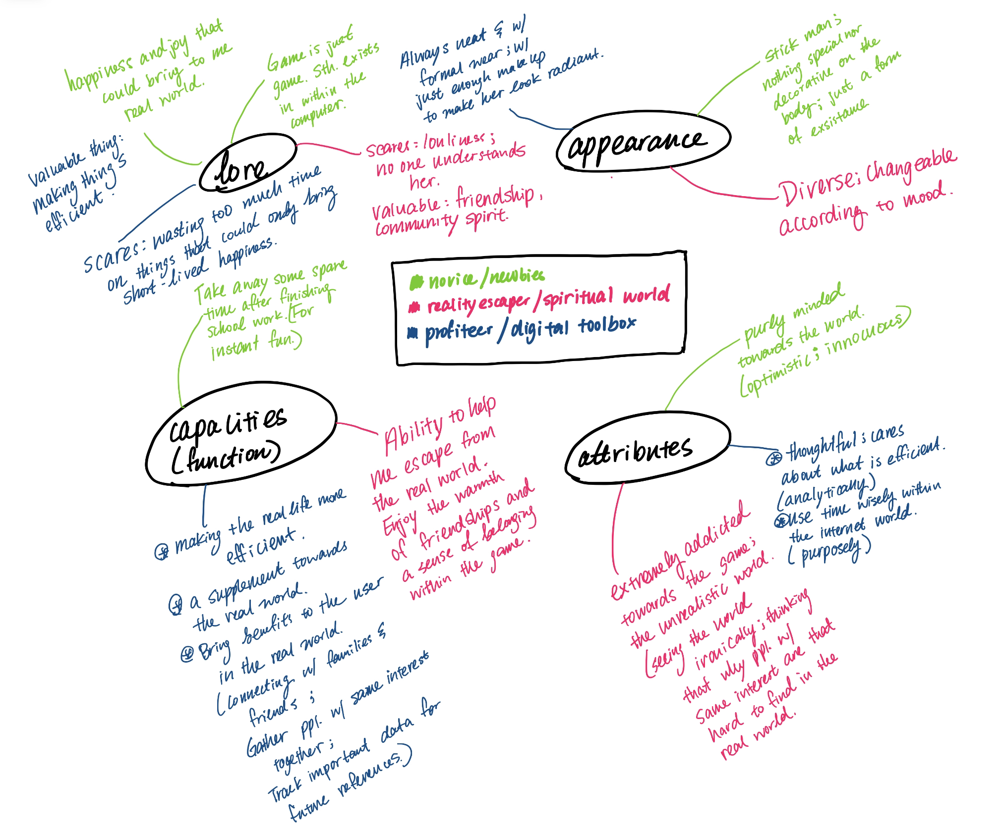

Inspiratioin and Process
-
One of my initial inspiration was this game that I used to play called "QQDance" during my Juinor High School. It was a way of escaping the reality of me being in a environment with language bounderies.

-
The second inspiration was this chatroom called "QQChatRoom," where people would put on different outfits and join rooms that they want and chat with people they know or people they do not know.

-
The initial ideas of forming the avatars and their personalities.


The idea that I have for my avatars was to create an environment where they could communicate freely without any worry of different languages.